EE José Carlos Nogueira Reverendo – Professor As imagens deste guia usam somente dados de exemplo (nomes fictícios).
Guia do Sisto · Equipe Pedagógica
sisto.onrender.com
Antes de começar
Onde abrir o Sisto
No celular ou no computador, abra o navegador (Chrome, por exemplo) e digite: sisto.onrender.com
Não precisa instalar nenhum aplicativo.
Do que você precisa
O seu e-mail e uma senha. Quem cadastra e entrega a primeira senha é a Gestão da escola.
Como ler este guia
Cada página mostra um passo. Os 1 números vermelhos na imagem mostram onde tocar, na mesma ordem do texto ao lado.
Sobre as imagens
Algumas imagens mostram outro perfil no alto da tela (por exemplo, "Professor Exemplo"). Os botões e os campos são os mesmos para você.
Cuidado com os dados
As ocorrências têm informações de estudantes menores de idade. Não mostre a tela a outras pessoas, não compartilhe a sua senha e saia do Sisto quando terminar.
EE José Carlos Nogueira Reverendo – ProfessorPágina 2 de 33
Guia do Sisto · Equipe Pedagógica
sisto.onrender.com
Passo 1 de 28
Entrar no Sisto
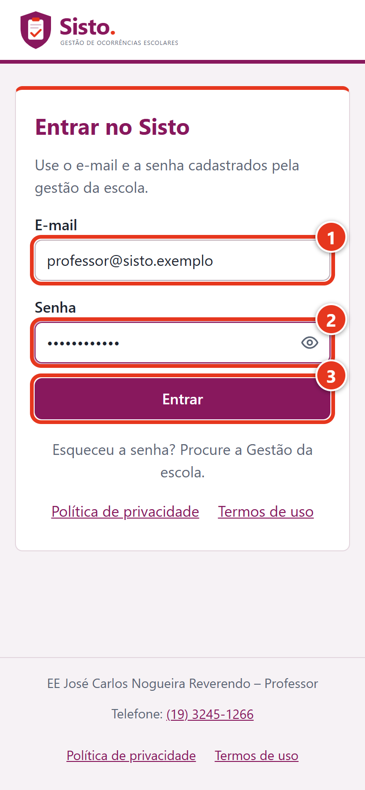
Abra o navegador do celular (Chrome, por exemplo) e digite o endereço sisto.onrender.com.
1Digite o seu e-mail.
2Digite a sua senha. Ela aparece como bolinhas, por segurança.
3Toque em Entrar.
Dica: O e-mail e a primeira senha são entregues pela Gestão da escola.
EE José Carlos Nogueira Reverendo – ProfessorPágina 3 de 33
Guia do Sisto · Equipe Pedagógica
sisto.onrender.com
Passo 2 de 28
Primeiro acesso: crie a sua senha
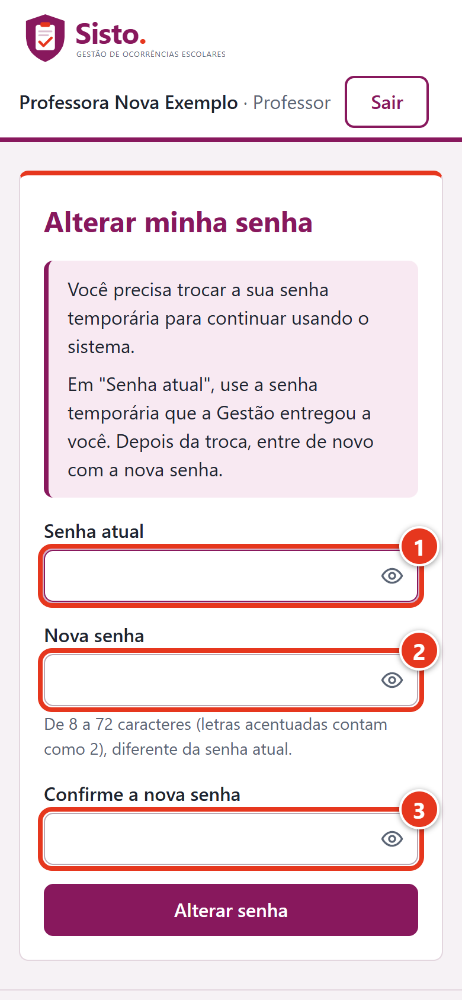
Na primeira vez, o Sisto pede para você trocar a senha que recebeu da Gestão.
1Em Senha atual, digite a senha que você recebeu da Gestão.
2Em Nova senha, crie uma senha com pelo menos 8 caracteres, diferente da que recebeu.
3Em Confirme a nova senha, digite a senha nova de novo e toque em Alterar senha.
Dica: Depois disso, o Sisto volta para a tela de entrada. Entre com a senha nova.
EE José Carlos Nogueira Reverendo – ProfessorPágina 4 de 33
Guia do Sisto · Equipe Pedagógica
sisto.onrender.com
Passo 3 de 28
A tela inicial
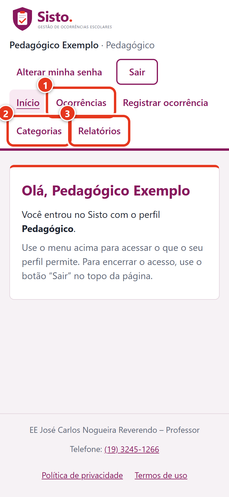
Depois de entrar, use o menu no alto da tela.
1Ocorrências: todas as ocorrências da escola.
2Categorias: os tipos de ocorrência.
3Relatórios: quantidade de ocorrências por período, turma ou categoria.
Dica: "Registrar ocorrência" funciona como no passo a passo deste guia.
EE José Carlos Nogueira Reverendo – ProfessorPágina 5 de 33
Guia do Sisto · Equipe Pedagógica
sisto.onrender.com
Registrar uma ocorrência (1 de 6)
Passo 4 de 28
Registrar: turma e estudantes
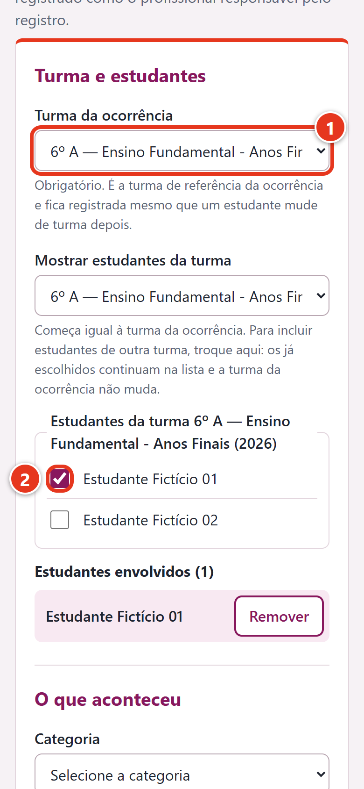
1Toque em Turma da ocorrência e escolha a turma.
2Marque o quadradinho de cada estudante envolvido. Pode marcar mais de um.
Dica: Os estudantes marcados aparecem logo abaixo, em "Estudantes envolvidos".
EE José Carlos Nogueira Reverendo – ProfessorPágina 6 de 33
Guia do Sisto · Equipe Pedagógica
sisto.onrender.com
Registrar uma ocorrência (2 de 6)
Passo 5 de 28
Registrar: o que aconteceu
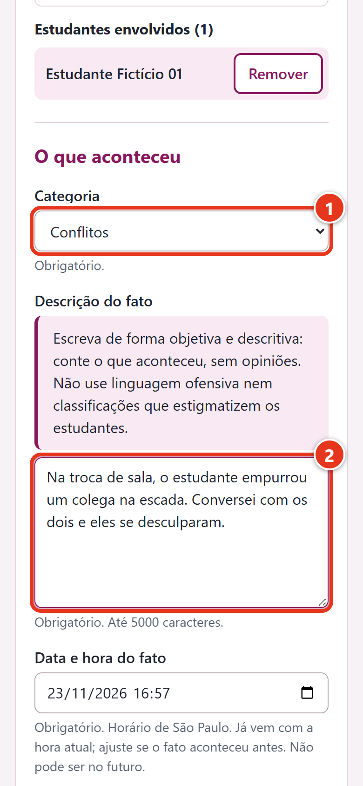
1Escolha a Categoria (por exemplo: Conflitos, Indisciplina, Bullying).
2Em Descrição do fato, conte o que aconteceu.
Dica: Escreva só os fatos, sem opiniões, apelidos ou palavras ofensivas.
EE José Carlos Nogueira Reverendo – ProfessorPágina 7 de 33
Guia do Sisto · Equipe Pedagógica
sisto.onrender.com
Registrar uma ocorrência (3 de 6)
Passo 6 de 28
Registrar: quando e onde
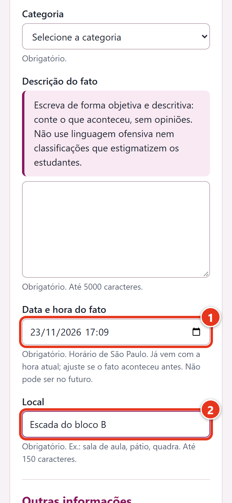
1A Data e hora do fato já vem preenchida com o momento atual. Se o fato aconteceu antes, ajuste.
2Em Local, escreva onde aconteceu (sala de aula, pátio, quadra...).
EE José Carlos Nogueira Reverendo – ProfessorPágina 8 de 33
Guia do Sisto · Equipe Pedagógica
sisto.onrender.com
Registrar uma ocorrência (4 de 6)
Passo 7 de 28
Registrar: outras informações
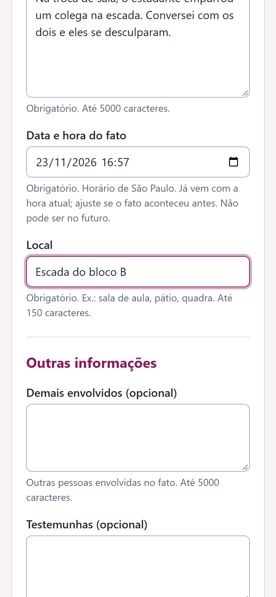
Estes campos são opcionais. Preencha só se tiver a informação.
Demais envolvidos: outras pessoas que participaram.
Testemunhas: quem viu o fato.
Providências imediatas: o que você já fez na hora.
Observações: algo mais que seja importante.
EE José Carlos Nogueira Reverendo – ProfessorPágina 9 de 33
Guia do Sisto · Equipe Pedagógica
sisto.onrender.com
Registrar uma ocorrência (5 de 6)
Passo 8 de 28
Registrar: para quem encaminhar
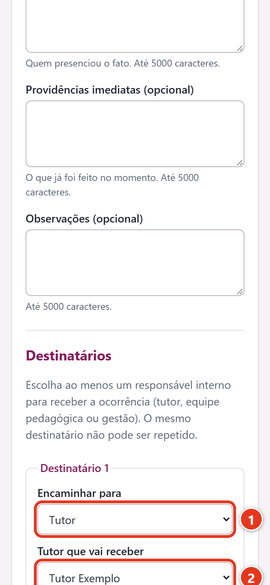
Escolha quem vai receber a ocorrência.
1Em Encaminhar para, escolha Tutor, Equipe pedagógica ou Gestão.
2Se escolheu Tutor, escolha qual tutor vai receber.
Dica: Para encaminhar a mais de uma pessoa, toque em "Adicionar destinatário".
EE José Carlos Nogueira Reverendo – ProfessorPágina 10 de 33
Guia do Sisto · Equipe Pedagógica
sisto.onrender.com
Registrar uma ocorrência (6 de 6)
Passo 9 de 28
Registrar: enviar
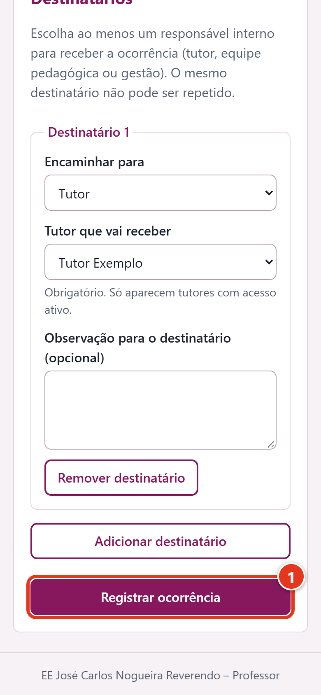
1Confira tudo e toque em Registrar ocorrência.
Dica: Se faltar alguma informação obrigatória, o Sisto mostra uma mensagem em vermelho no campo que falta.
EE José Carlos Nogueira Reverendo – ProfessorPágina 11 de 33
Guia do Sisto · Equipe Pedagógica
sisto.onrender.com
Passo 10 de 28
Pronto! Ocorrência registrada
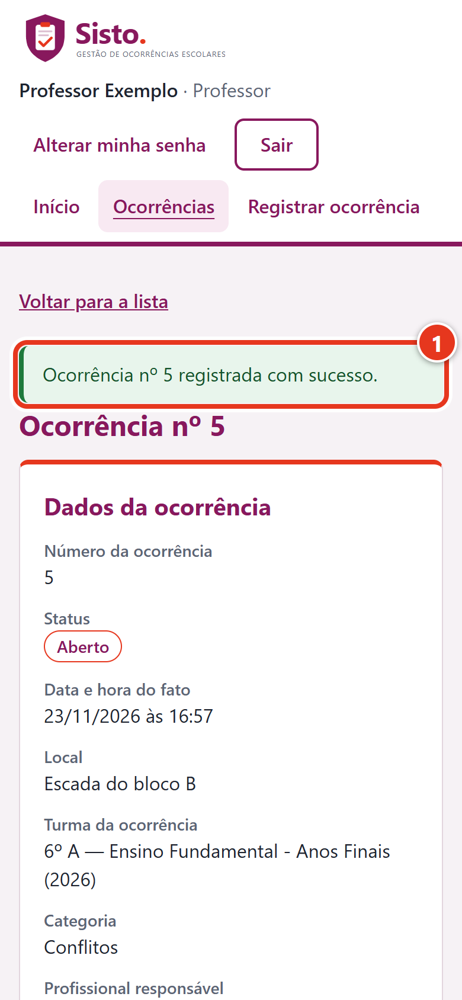
1O Sisto mostra o número da ocorrência. Anote, se quiser acompanhar depois.
Dica: Uma ocorrência registrada não pode ser editada. Confira tudo antes de tocar em "Registrar ocorrência".
EE José Carlos Nogueira Reverendo – ProfessorPágina 12 de 33
Guia do Sisto · Equipe Pedagógica
sisto.onrender.com
Passo 11 de 28
Ver as ocorrências
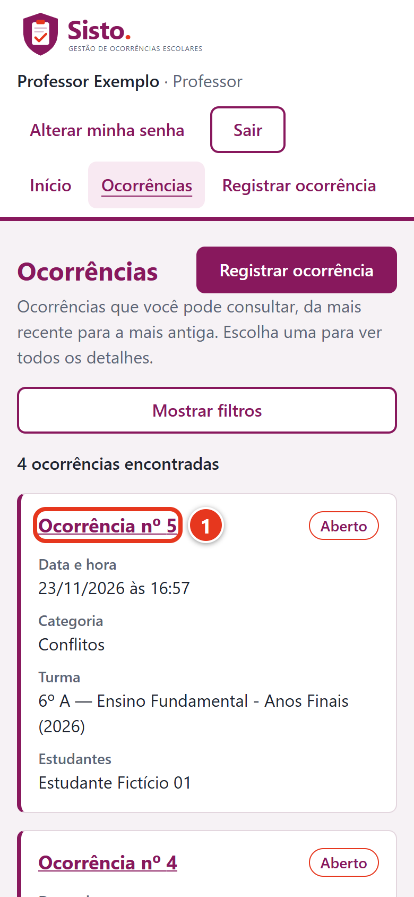
Toque em Ocorrências no menu. Elas aparecem pela data do fato, da mais recente para a mais antiga.
1Toque no número da ocorrência para ver todos os detalhes.
Aberto: registrada, aguardando atendimento.
Em acompanhamento: alguém já está cuidando do caso.
Encerrado: o caso foi finalizado.
EE José Carlos Nogueira Reverendo – ProfessorPágina 13 de 33
Guia do Sisto · Equipe Pedagógica
sisto.onrender.com
Passo 12 de 28
Procurar uma ocorrência
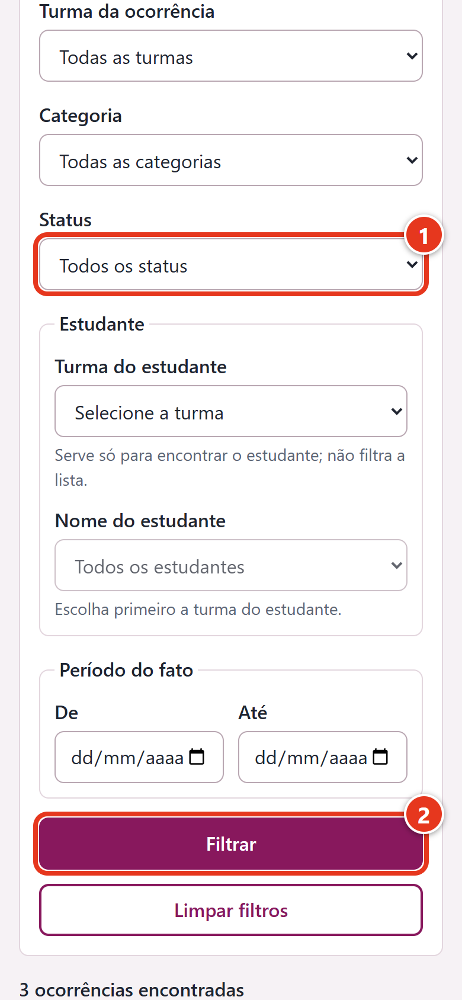
Toque em Mostrar filtros para procurar por estudante, turma, categoria, status ou período.
1Escolha, por exemplo, o Status.
2Toque em Filtrar.
Dica: Para ver tudo de novo, toque em "Limpar filtros".
EE José Carlos Nogueira Reverendo – ProfessorPágina 14 de 33
Guia do Sisto · Equipe Pedagógica
sisto.onrender.com
Passo 13 de 28
Os detalhes da ocorrência
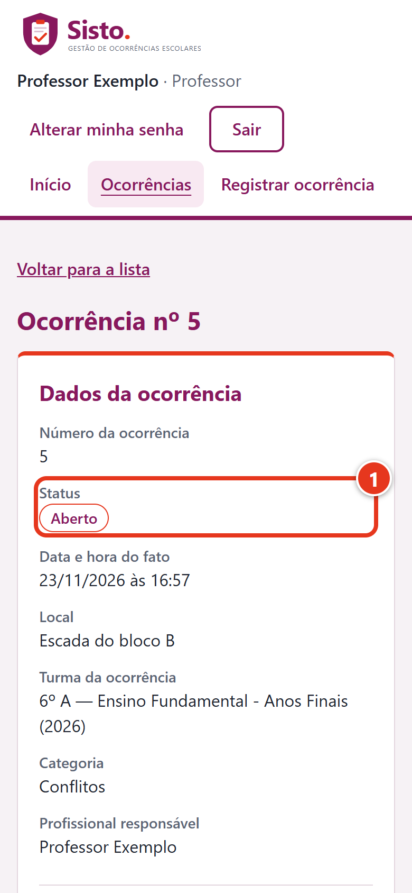
1O Status mostra em que situação a ocorrência está.
Dica: Role a tela para baixo para ver estudantes, encaminhamentos, comunicações e providências.
EE José Carlos Nogueira Reverendo – ProfessorPágina 15 de 33
Guia do Sisto · Equipe Pedagógica
sisto.onrender.com
Passo 14 de 28
Encaminhar uma ocorrência
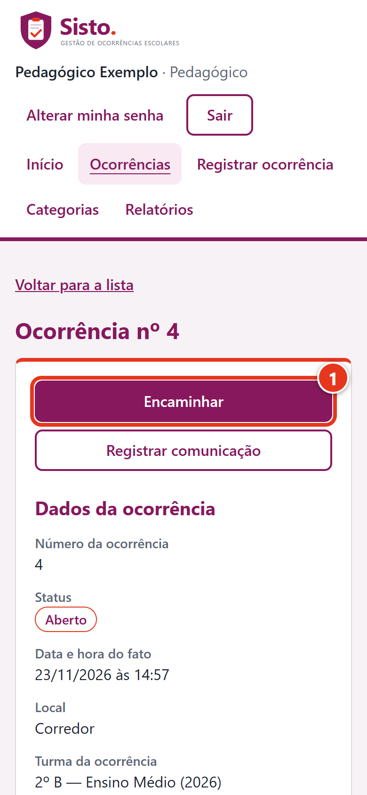
Abra a ocorrência e toque em Encaminhar.
1Encaminhar: envia o caso e define quem vai acompanhá-lo.
EE José Carlos Nogueira Reverendo – ProfessorPágina 16 de 33
Guia do Sisto · Equipe Pedagógica
sisto.onrender.com
Passo 15 de 28
Encaminhar: preencher
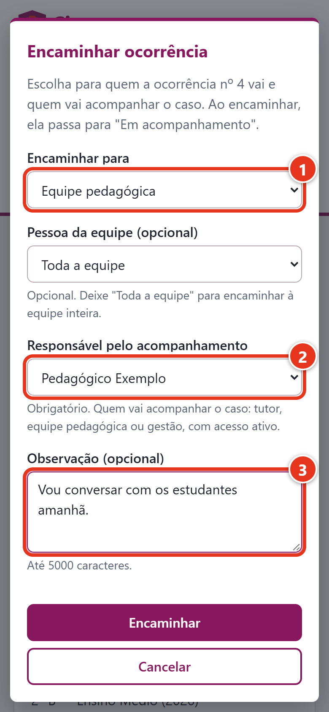
1Em Encaminhar para, escolha Tutor, Equipe pedagógica ou Gestão. Se for Tutor, escolha qual tutor; se for uma equipe, pode deixar "Toda a equipe".
2Escolha o Responsável pelo acompanhamento: quem vai cuidar do caso.
3Se quiser, escreva uma Observação.
EE José Carlos Nogueira Reverendo – ProfessorPágina 17 de 33
Guia do Sisto · Equipe Pedagógica
sisto.onrender.com
Passo 16 de 28
Encaminhar: enviar
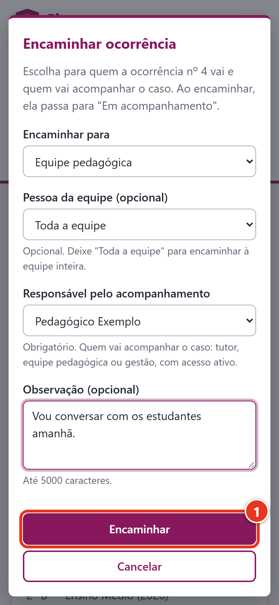
1Toque em Encaminhar.
EE José Carlos Nogueira Reverendo – ProfessorPágina 18 de 33
Guia do Sisto · Equipe Pedagógica
sisto.onrender.com
Passo 17 de 28
A ocorrência está em acompanhamento
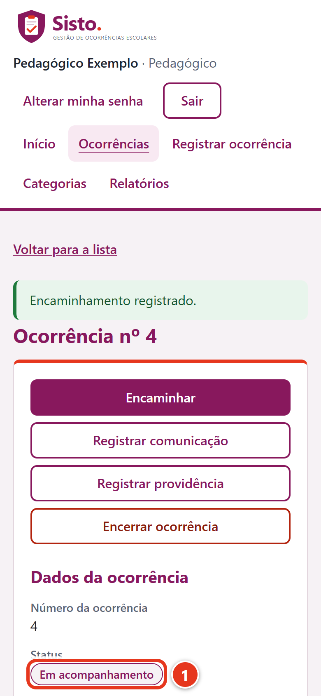
1O status muda para Em acompanhamento e o responsável já pode registrar providências.
Dica: Para trocar o responsável, encaminhe de novo escolhendo outra pessoa.
EE José Carlos Nogueira Reverendo – ProfessorPágina 19 de 33
Guia do Sisto · Equipe Pedagógica
sisto.onrender.com
Passo 18 de 28
Registrar uma comunicação
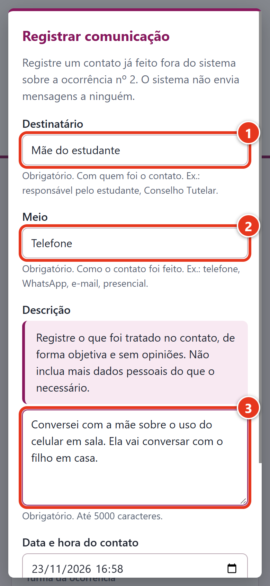
Use para anotar um contato que você já fez (ligação, mensagem, conversa). O Sisto não envia mensagens.
1Destinatário: com quem você falou (ex.: mãe do estudante).
2Meio: como falou (telefone, WhatsApp, pessoalmente...).
3Descrição: o que foi conversado, de forma objetiva.
EE José Carlos Nogueira Reverendo – ProfessorPágina 20 de 33
Guia do Sisto · Equipe Pedagógica
sisto.onrender.com
Passo 19 de 28
Registrar uma comunicação: enviar
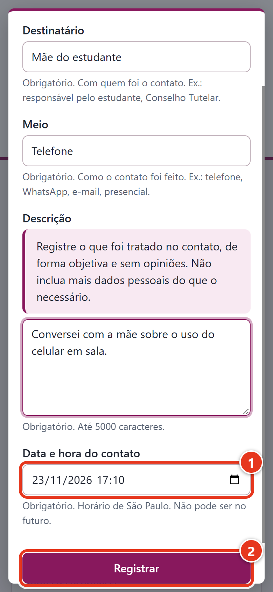
1Confira a Data e hora do contato. Ajuste se foi antes.
2Toque em Registrar.
EE José Carlos Nogueira Reverendo – ProfessorPágina 21 de 33
Guia do Sisto · Equipe Pedagógica
sisto.onrender.com
Passo 20 de 28
Registrar uma providência
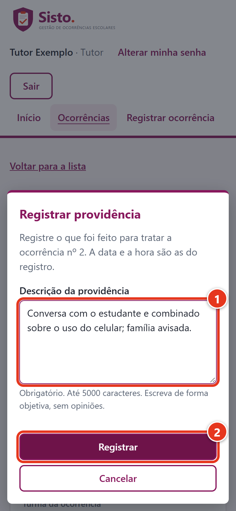
Toque em Registrar providência e conte o que foi feito.
1Escreva a providência (ex.: conversa com o estudante e a família).
2Toque em Registrar.
Dica: Este botão só aparece com a ocorrência Em acompanhamento. Para encerrar, ela precisa ter pelo menos uma providência.
EE José Carlos Nogueira Reverendo – ProfessorPágina 22 de 33
Guia do Sisto · Equipe Pedagógica
sisto.onrender.com
Passo 21 de 28
Encerrar a ocorrência
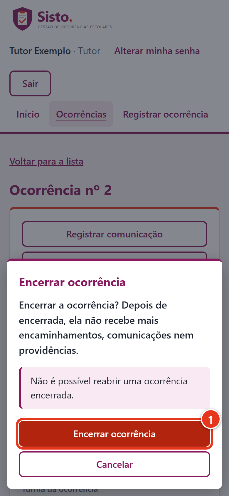
Quando o caso estiver resolvido, toque em Encerrar ocorrência.
1Confirme tocando em Encerrar ocorrência de novo.
Dica: Atenção: uma ocorrência encerrada não pode ser reaberta.
EE José Carlos Nogueira Reverendo – ProfessorPágina 23 de 33
Guia do Sisto · Equipe Pedagógica
sisto.onrender.com
Passo 22 de 28
Ocorrência encerrada
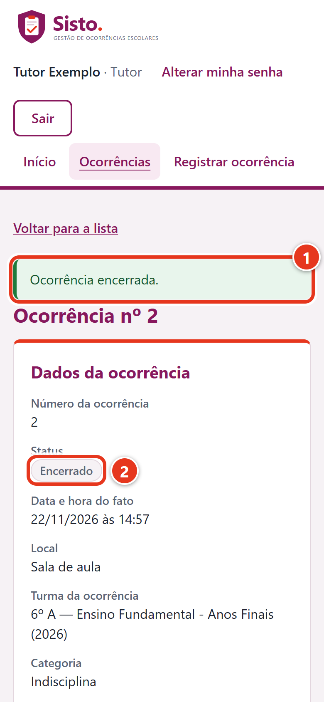
1O Sisto avisa que a ocorrência foi encerrada.
2O status muda para Encerrado.
EE José Carlos Nogueira Reverendo – ProfessorPágina 24 de 33
Guia do Sisto · Equipe Pedagógica
sisto.onrender.com
Passo 23 de 28
O histórico
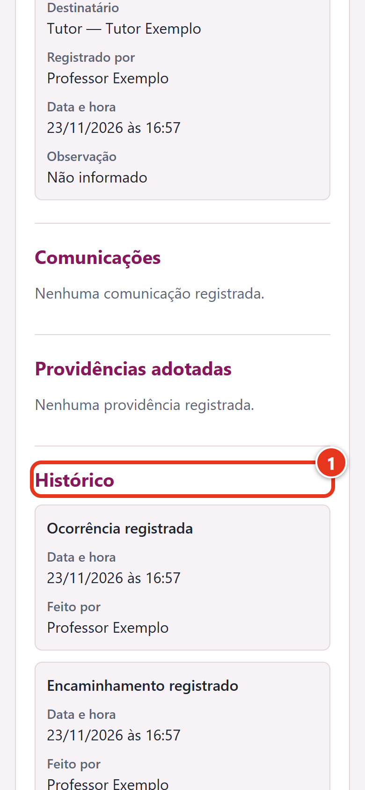
1No fim da página fica o Histórico: tudo o que aconteceu com a ocorrência, com data, hora e quem fez.
EE José Carlos Nogueira Reverendo – ProfessorPágina 25 de 33
Guia do Sisto · Equipe Pedagógica
sisto.onrender.com
Passo 24 de 28
Gerar um relatório
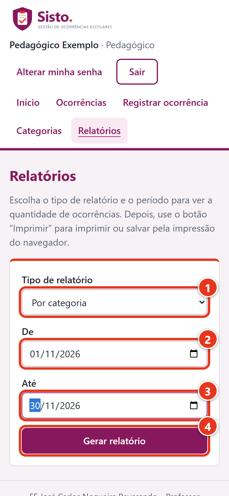
No menu, toque em Relatórios.
1Escolha o Tipo de relatório: total do período, por turma ou por categoria.
2Em De, escolha a primeira data do período.
3Em Até, escolha a última data.
4Toque em Gerar relatório.
EE José Carlos Nogueira Reverendo – ProfessorPágina 26 de 33
Guia do Sisto · Equipe Pedagógica
sisto.onrender.com
Passo 25 de 28
O resultado do relatório
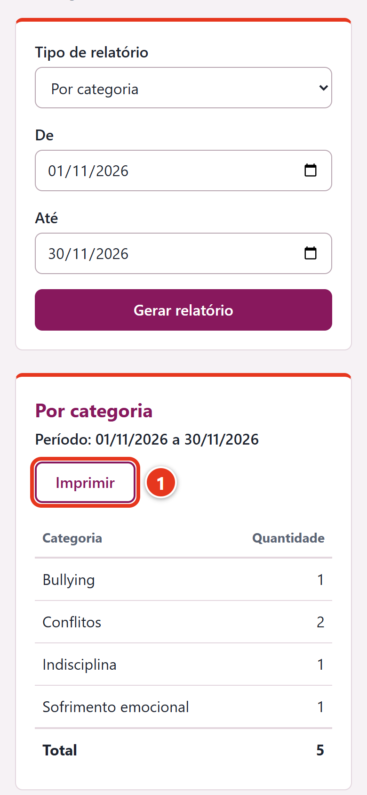
O Sisto mostra uma tabela com as quantidades.
1Toque em Imprimir para imprimir ou salvar em PDF.
EE José Carlos Nogueira Reverendo – ProfessorPágina 27 de 33
Guia do Sisto · Equipe Pedagógica
sisto.onrender.com
Passo 26 de 28
Cadastrar uma categoria
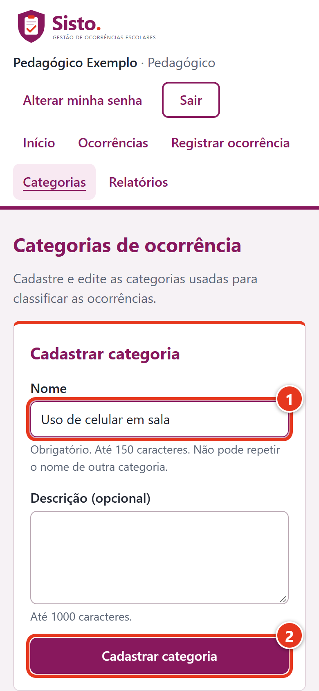
No menu, toque em Categorias. As categorias são os tipos de ocorrência.
1Digite o nome da categoria nova.
2Toque em Cadastrar categoria.
Dica: Categorias não são apagadas: elas podem ser editadas.
EE José Carlos Nogueira Reverendo – ProfessorPágina 28 de 33
Guia do Sisto · Equipe Pedagógica
sisto.onrender.com
Passo 27 de 28
Trocar a sua senha
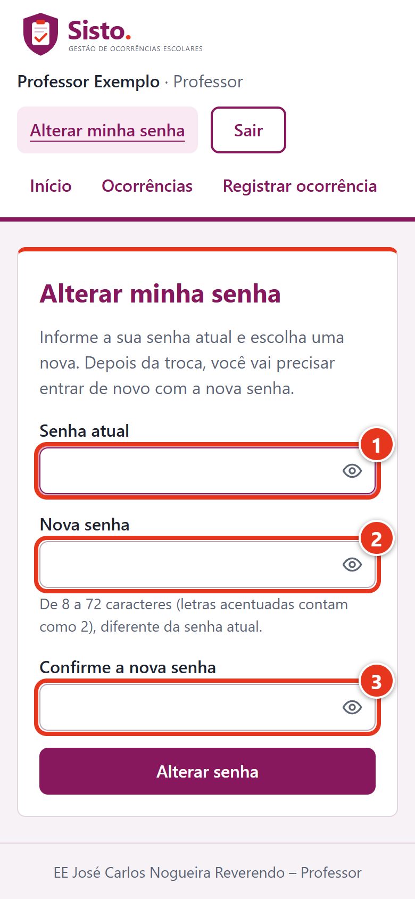
No alto da tela, toque em Alterar minha senha.
1Digite a senha atual.
2Digite a senha nova (pelo menos 8 caracteres, diferente da atual).
3Repita a senha nova e toque em Alterar senha.
Dica: Depois de trocar, o Sisto pede para você entrar de novo, com a senha nova.
EE José Carlos Nogueira Reverendo – ProfessorPágina 29 de 33
Guia do Sisto · Equipe Pedagógica
sisto.onrender.com
Passo 28 de 28
Sair do Sisto
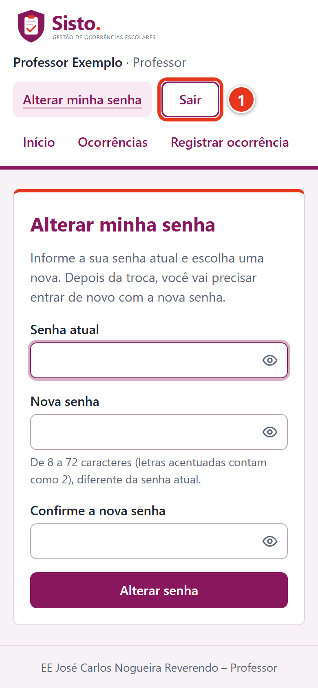
1Toque em Sair, no alto da tela.
Dica: Sempre saia quando usar um computador ou celular de outra pessoa.
EE José Carlos Nogueira Reverendo – ProfessorPágina 30 de 33
Guia do Sisto · Equipe Pedagógica
sisto.onrender.com
No computador
No computador, o Sisto é o mesmo: os botões e os campos têm os mesmos nomes. Só a tela é mais larga, e o menu fica todo em uma linha.
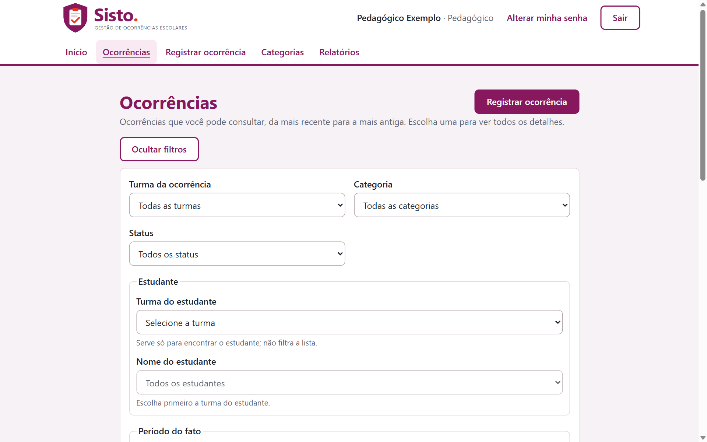
EE José Carlos Nogueira Reverendo – ProfessorPágina 31 de 33
Guia do Sisto · Equipe Pedagógica
sisto.onrender.com
Deu algum problema?
Esqueci a minha senha.
Procure a Gestão da escola. Ela cria uma senha temporária para você, e no próximo acesso você escolhe uma senha nova.
Apareceu "E-mail ou senha inválidos".
Confira o e-mail e digite a senha de novo, com atenção às letras maiúsculas e minúsculas.
Errei a senha várias vezes e apareceu "Muitas tentativas".
Depois de 5 senhas erradas, o Sisto pede para esperar. Aguarde até 15 minutos e tente de novo. A sua conta não fica bloqueada.
O Sisto demorou para abrir.
Fora do horário da escola (antes das 7h, depois das 20h e nos fins de semana), a primeira abertura pode levar até 1 minuto. Aguarde, sem fechar a página.
Apareceu "Não foi possível conectar ao servidor".
Confira a internet do celular (Wi-Fi ou dados móveis) e tente de novo.
Apareceu "Sua sessão expirou".
Por segurança, a entrada vale por até 8 horas. O que você escreveu continua na tela (1): copie o texto, se precisar. Toque em Entrar novamente (2). O Sisto volta para a mesma tela: cole o texto e envie de novo.
Apertei sem querer para fechar uma janela com texto.
O Sisto pergunta antes de descartar. Toque em Continuar editando (1) para voltar ao texto, ou em Descartar (2) se quiser apagar.
EE José Carlos Nogueira Reverendo – ProfessorPágina 32 de 33
Guia do Sisto · Equipe Pedagógica
sisto.onrender.com
Deu algum problema? (imagens)
Apareceu "Sua sessão expirou".
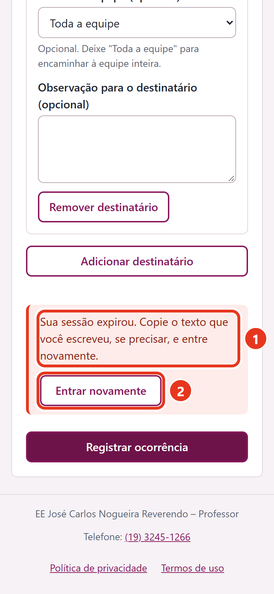
Apertei sem querer para fechar uma janela com texto.
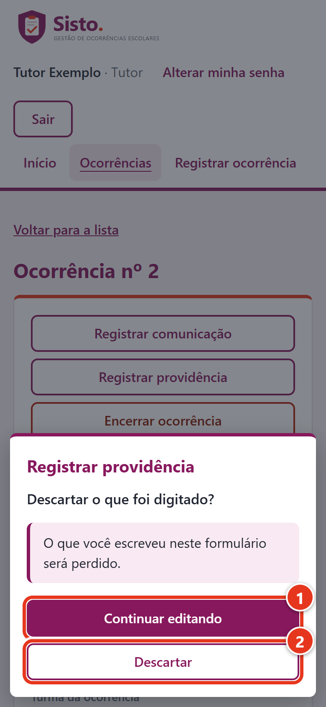
Ainda com dúvida?
Procure a Gestão ou a Equipe Pedagógica da escola.
EE José Carlos Nogueira Reverendo – ProfessorPágina 33 de 33